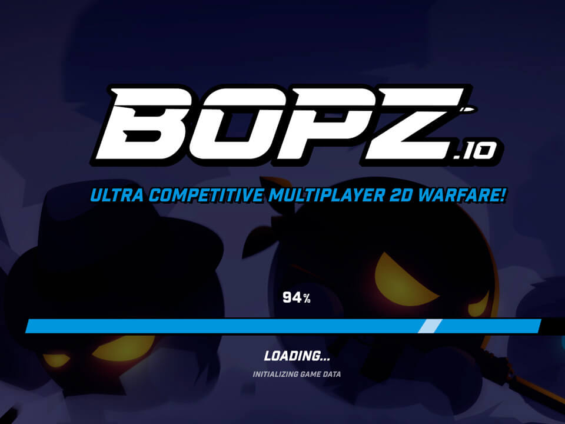
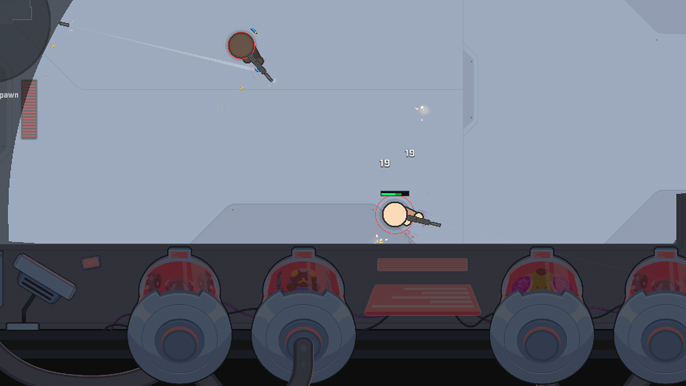

Introduction
BOPZ.io is a highly competitive, top-down 2D tactical shooter engineered by End Game Interactive, the creators of ZombsRoyale.io. Often described as the definitive '2D Counter-Strike,' it shifts away from casual arcade brawling to deliver precise 5v5 team-based combat. Players engage in intense search-and-destroy matches, planting and defusing bombs while outsmarting opponents in a fast-paced multiplayer arena. What makes BOPZ.io unique is its deep tactical round economy, strategic utility deployment, and the 2026 input-buffer smoothing that ensures pixel-perfect cursor tracking. Players love it because survival relies on crosshair placement, angle holding, and smart economy management rather than blind running and gunning. It offers a pure, skill-based competitive experience directly in your browser.
Getting Started

To start playing BOPZ.io, visit the official website and jump straight into a 5v5 match. As an Attacker, your goal is to infiltrate bomb sites and plant the explosive payload using the F key. As a Defender, you must hold choke points or defuse the bomb under fire. Navigation is handled via WASD keys; remember to release them to stabilize your weapon accuracy before shooting. Aim with your mouse and fire using Left Click, utilizing tap-firing to control recoil. Press R to reload behind safe cover, and use Q or E to deploy tactical utilities like Smoke screens or Flashbangs. During the brief preparation phase at the start of each round, press B to open the buy menu. Here, you will spend currency earned from round wins, losses, and eliminations to purchase high-caliber firearms, armor, and utility gear. Mastering these basic mechanics and understanding the buy phase economy are your crucial first steps to dominating the arena.
Basic Tips
First, master the AK-47 3-round burst, which is the most devastating rifle in the game. Spraying wildly wastes ammo and ruins accuracy; use disciplined bursts at medium ranges to keep bullets clustered on the enemy hitbox. Second, always manage your economy wisely. Do not buy an expensive rifle in the first round if your team is saving; coordinate with your squad to ensure everyone has armor and utility when it matters most. Third, utilize your WASD movement correctly. Never shoot while moving, as your accuracy will plummet. Stop completely, let your crosshair stabilize, and then take your shot. Fourth, communicate with your team using quick pings or voice chat. If you spot an enemy rotating, alert your defenders to adjust their angle holds. Finally, use your tactical utilities like Flashbangs to clear tight corners before pushing a bomb site, giving you a crucial split-second advantage over defenders holding the angle.
Advanced Strategies
Experienced players should focus on advanced map control and utility stacking. First, execute fake plants as an Attacker. Make noise near a bomb site to draw defenders, then quickly rotate to the other site with your team, capitalizing on their displaced positions. Second, master jiggle peeking to gather information without committing to a full duel. Briefly step out of cover to bait an enemy shot, note their position, and let your teammate trade the kill. Third, optimize your crosshair placement at head level. Since BOPZ.io features precise hitboxes, keeping your crosshair pre-aimed at common enemy angles reduces your reaction time to zero, turning potential losses into instant eliminations. Fourth, utilize the tactical round economy to force eco rounds. If you win a pistol round, buy just enough to maintain an advantage, forcing the enemy into a full buy next round where your saved economy can overwhelm them with superior firepower and utility.
Pro Tips

To separate yourself from good players, leverage the 2026 input-buffer smoothing for instant flick-shots. Practice tracking moving targets through smoke screens using audio cues and minimap pings. Secondly, master the defuse fake. As a Defender, start defusing to force an Attacker out of hiding, then immediately cancel and shoot them when they peek. Third, learn the exact recoil patterns of every weapon. The SMGs have a distinct vertical climb that can be countered by pulling your mouse down precisely, allowing for lethal close-quarters sprays. Finally, always trade kills. If a teammate dies, you must be close enough to immediately eliminate their killer, ensuring the enemy never gains a numerical advantage in the round.
Conclusion
BOPZ.io delivers a pure, tactical 2D shooter experience that rewards teamwork, economy management, and precise aim. Whether you are planting the bomb or holding a crucial angle, every single decision matters. Jump into the arena, communicate with your squad, and climb the leaderboard. The ultimate 2D tactical experience awaits you directly in your browser today!